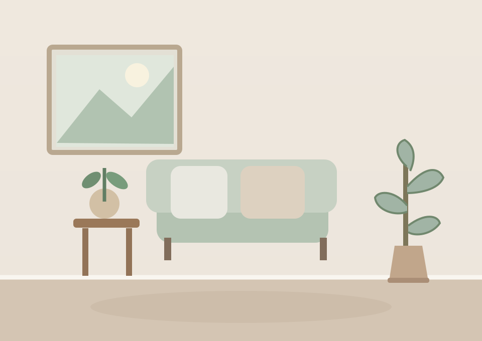
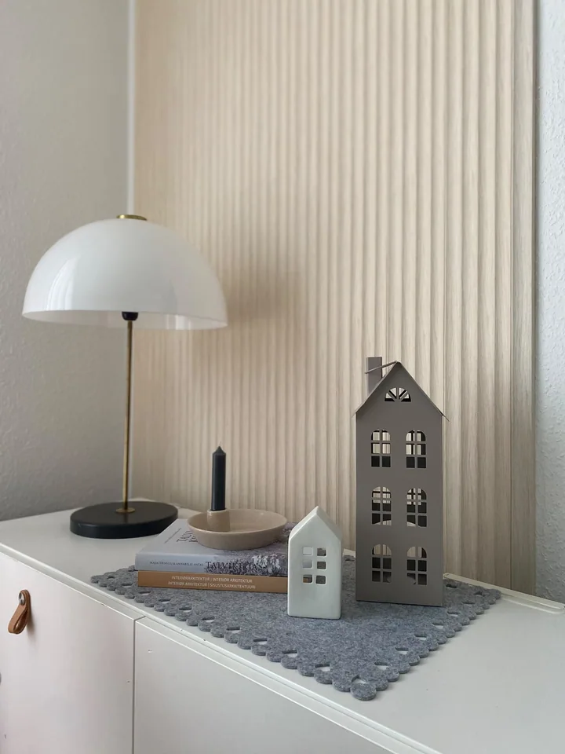

Calm Living
Warm beige, light wood and a welcoming sofa.
A TOUCH OF THE NORTH
Three simple ideas inspired by natural materials, soft shades and Nordic spaces.
These are original illustrations of sample concepts, not completed client projects.
Warm beige, light wood and a welcoming sofa.

Earthy greens, gentle details and soft textures.

Simple lines, natural daylight and open space.
ORIGINAL PHOTOGRAPHY
A little collection of original photographs from everyday spaces: natural materials, warm light and thoughtful details. These are not completed client projects.





| Concept | Best for | Key colours |
|---|---|---|
| Calm Living | Living rooms | Beige and light wood |
| Natural Warmth | Family rooms | Soft green and oak |
| Light & Airy | Dining spaces | Cream and warm white |